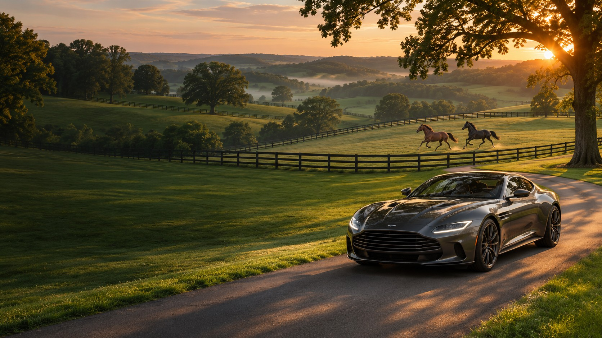
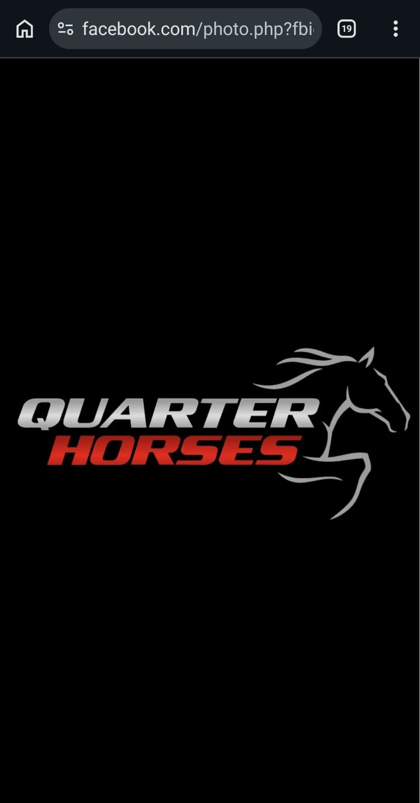

KENTUCKY SPIRIT. WORLD-CLASS PERFORMANCE.
Born to run.
Built to inspire.
From Kentucky’s rolling hills and legendary thoroughbreds
to the automotive world’s most brilliant minds in design
and performance. A shared pursuit of the extraordinary.
THE COLLECTION
Exceptional by nature.
Selected by instinct.
A closer look at what drives us.
Explore our illustrative collection.
CONCEPT COLLECTION · Sample vehicles and indicative pricing. Images are illustrative; availability is not confirmed.

THE QUARTER HORSES APPROACH
Two worlds.
One driving spirit.
In Kentucky’s rolling hills, greatness has a rhythm. It lives in the stride of a thoroughbred and a legacy of speed. Quarter Horses brings that same spirit to automobiles shaped by the industry’s most brilliant minds in design and performance.
Design with distinction
Sculpted lines. Considered details. An unmistakable presence.
Performance with pedigree
Precision engineering and driving character that stir the senses.
Kentucky at heart
An independent spirit. A warm welcome. A personal connection.
YOUR NEXT CHAPTER
Some things are better
experienced in person.
Find your next thoroughbred. Make the road your own.